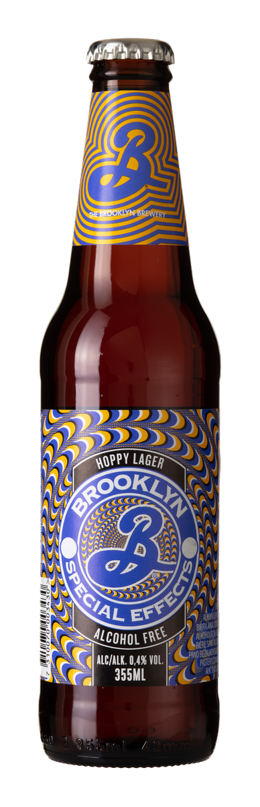

Vi har lavet nogle lækre opskrifter på mad, som din øl går godt til. Flip kortet og se, hvordan du gør. Bon apétit.

Ingredienser:3 Æg, Mælk, salt og peber, ricotta ost, chorizo, avocado, rugbrød, radiser, tomater, frisk gedeost
Sådan gør du: Æg, mælk og ricotta blandes sammen og omeletten laves på en pande. Chorizo pølse skæres i små stykker og steges på en pande. Avocado moses med en gaffel og smøres på det ristede rugbrød, hvor radiser og tomater skæres ud og pyntes på. Chorizo og gedeost feta drysses oven på omelet og rugbrødsmad.
Ingredienser: ¼ liter koldt vand, 20g gær, 1 tsk sukker, 300g tipomel ”00”, 125g semolamel, 1tsk salt, 1spsk olivenolie
Sådan gør du: Bland vand, gær og sukker sammen. Tilsæt herefter 150 g tipo 00-mel og 125 g semola. Det hele æltes. Tilsæt salt og olie, rør videre og tilsæt derefter resten af melet over to omgange. Ælt dejen grundigt i 10 min. Pizzaen pyntes og bages i ovnen på 200 grader i 10 minutter. Tip: bag pizzaen på en pizzasten for ekstra sprød skorpe.

Ingredienser:Grønkål, Rød peberfrugt, Biogan Black Eye Bønner, Granatæblekerner, Belugalinser, Gedeost Feta, en kvart butternut squash
Sådan gør du: Grønkål og peberfrugt snittes fint og blandes sammen med granatæblekerner. Belugalinser og Biogan black eye bønner koges, som anvist på pakken. Det hele blandes sammen og gedeost feta smuldres. Butternut squash tilberedes i ovnen på 200 grader i 15 min.